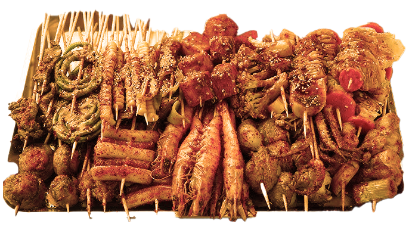
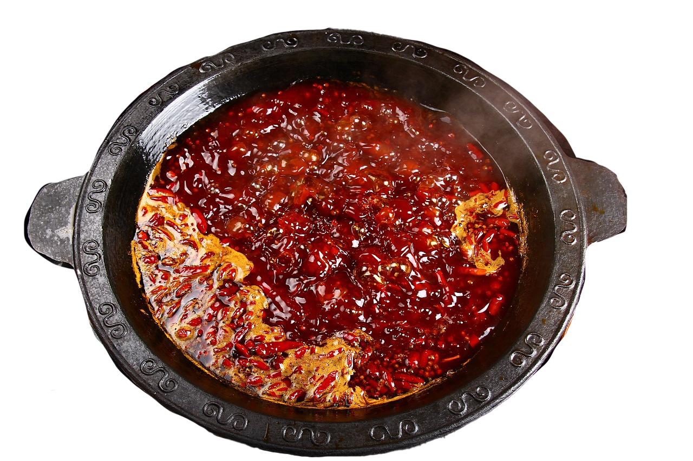

SHAKAO
SHAOKAO(Chinese BBQ) features skewered meats,
like pork or chicken, marinated in a blend of spices
and grilled over an open flame. Known for its smoky
aroma and tender, flavorful meat, it’s a beloved street
food and dining tradition in Chinese cuisine.
like pork or chicken, marinated in a blend of spices
and grilled over an open flame. Known for its smoky
aroma and tender, flavorful meat, it’s a beloved street
food and dining tradition in Chinese cuisine.

SICHUAN HOTPOT
Sichuan hotpot is a fiery and flavorful culinary experience
that originates from the Sichuan province of China. Known for
its bold, spicy broth infused with Sichuan peppercorns, chili
peppers, and aromatic herbs, it offers a unique balance of heat
and numbing sensations. Diners cook various ingredients like meats,
vegetables, and tofu in the bubbling broth, creating a communal
and interactive meal. The intense flavors and lively atmosphere
make Sichuan hotpot a beloved tradition for those seeking a spicy,
savory adventure.
that originates from the Sichuan province of China. Known for
its bold, spicy broth infused with Sichuan peppercorns, chili
peppers, and aromatic herbs, it offers a unique balance of heat
and numbing sensations. Diners cook various ingredients like meats,
vegetables, and tofu in the bubbling broth, creating a communal
and interactive meal. The intense flavors and lively atmosphere
make Sichuan hotpot a beloved tradition for those seeking a spicy,
savory adventure.
MILKTEA
The origin of milk tea is commonly traced to Taiwan in the 1980s,
where it first became popular in the form of bubble tea (also known as boba tea).
The drink was created by combining sweetened tea with milk and adding chewy
tapioca pearls. The iconic bubble tea became a sensation in Taiwan and quickly
spread to other parts of Asia and the world.
However, the concept of milk tea itself predates bubble tea and can be found
in various cultures. For example, in Hong Kong, the "Hong Kong-style milk tea"
has been a staple since the 1950s, made with strong black tea and evaporated or
condensed milk. Similarly, in mainland China, milk tea is enjoyed in different
regional forms, often combining traditional tea with milk for a smoother, richer flavor.
where it first became popular in the form of bubble tea (also known as boba tea).
The drink was created by combining sweetened tea with milk and adding chewy
tapioca pearls. The iconic bubble tea became a sensation in Taiwan and quickly
spread to other parts of Asia and the world.
However, the concept of milk tea itself predates bubble tea and can be found
in various cultures. For example, in Hong Kong, the "Hong Kong-style milk tea"
has been a staple since the 1950s, made with strong black tea and evaporated or
condensed milk. Similarly, in mainland China, milk tea is enjoyed in different
regional forms, often combining traditional tea with milk for a smoother, richer flavor.
 ERHU~
The erhu is a traditional Chinese stringed instrument, often referred to as the
ERHU~
The erhu is a traditional Chinese stringed instrument, often referred to as the"Chinese violin." It consists of two strings, typically tuned a fifth apart, and
is played with a bow that is placed between the strings. The erhu's distinct,
expressive sound is produced by drawing the bow across the strings while pressing
them with the fingers on the fingerboard. With its melancholic, yet deeply emotional
tone, the erhu is a key instrument in both classical Chinese music and modern
compositions, often used to evoke a wide range of emotions in performances.
It is a symbol of China's rich musical heritage and continues to captivate audiences
around the world.
BAOZI
Baozi is a popular Chinese steamed bun filled with a variety of savory or sweet fillings.
The dough is soft and fluffy, typically made from flour, yeast, and water, and is steamed
to perfection. Common fillings include pork, beef, vegetables, or sweet red bean paste,
making baozi a versatile dish enjoyed across China and beyond. Often eaten as a snack,
breakfast, or part of a meal, baozi is a comforting, flavorful treat that reflects the
rich culinary traditions of Chinese cuisine. Its combination of tender dough and delicious
fillings makes it a beloved favorite for many.
The dough is soft and fluffy, typically made from flour, yeast, and water, and is steamed
to perfection. Common fillings include pork, beef, vegetables, or sweet red bean paste,
making baozi a versatile dish enjoyed across China and beyond. Often eaten as a snack,
breakfast, or part of a meal, baozi is a comforting, flavorful treat that reflects the
rich culinary traditions of Chinese cuisine. Its combination of tender dough and delicious
fillings makes it a beloved favorite for many.